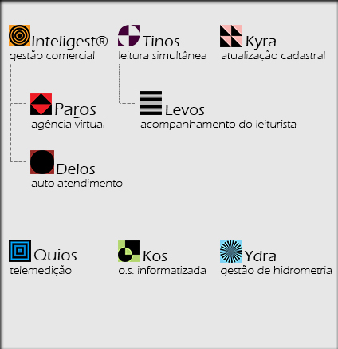

Produtos e Serviços
Integração de soluções tecnológicas e operacionais para gestão comercial de companhias de saneamento básico.
Produtos e Serviços
Integração de soluções tecnológicas e operacionais para gestão comercial de companhias de saneamento básico.
EGEO
Integração de Soluções Comerciais para o Saneamento
A integração destas soluções comerciais para o saneamento compõe a solução global da GMF denominada EGEO, que atua nas cinco principais áreas da empresa: cadastro, medição, faturamento e cobrança, atendimento e gestão. Além da licença de uso, implantação treinamento e manutenção dos sistemas, a GMF pode fornecer também os links de comunicação e hospedagem em data Center. Para operação de campo a GMF oferece mão de obra especializada e os equipamentos necessários para execução dos serviços.
Clique nos elementos do gráfico abaixo para mais informações:
Softwares - Produtos
Operações - Serviços